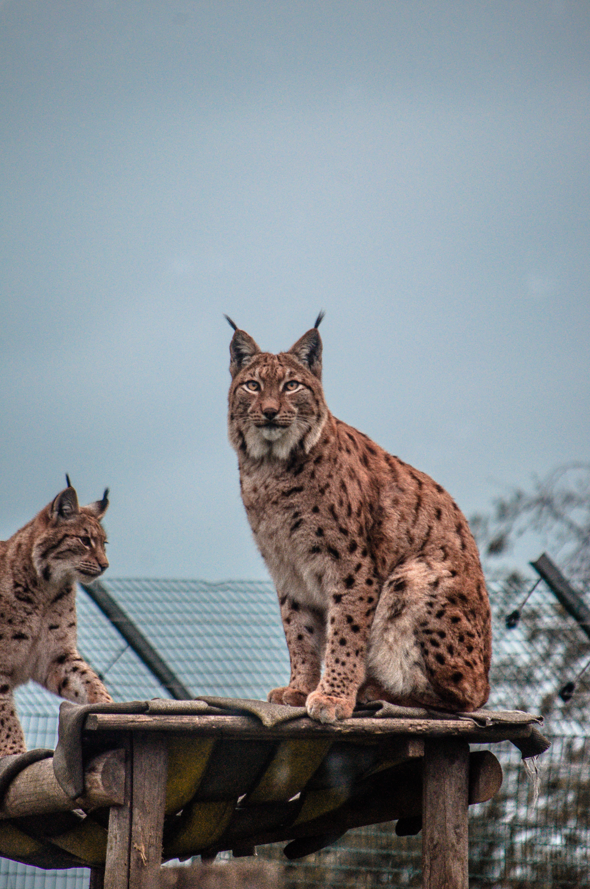

The lynx
Felis lynx
Species
-

Eurasian lynx
Lynx lynx
The Eurasian lynx is a medium-sized wild cat native to Northern, Central and Eastern Europe to Central Asia and Siberia, the Tibetan Plateau and the Himalayas. It inhabits temperate and boreal forests up to an elevation of 5,500 m (18,000 ft). Despite its wide distribution, it is threatened by habitat loss and fragmentation, poaching and depletion of prey.
-

Canada lynx
Lynx Canadensis
The Canada lynx is a medium-sized North American lynx that ranges across Alaska, Canada, and northern areas of the contiguous United States and occurs predominantly in dense boreal forests. This lynx is regularly trapped for the international fur trade in most of Alaska and Canada but is protected in the southern half of its range due to threats such as habitat loss.
-
Iberian lynx
Lynx pardinus
The Iberian lynx is a wild cat species endemic to the Iberian Peninsula in southwestern Europe. It is listed as Endangered on the IUCN Red List. In the 20th century, the Iberian lynx population had declined because of overhunting and poaching, fragmentation of suitable habitats; the population of its main prey species, the European rabbit, experienced a severe decline caused by myxomatosis and rabbit haemorrhagic disease.
-

Bobcat
Lynx Rufus
The bobcat, also known as the red lynx, is a medium-sized cat native to North America. It ranges from southern Canada, most of the contiguous United States to Oaxaca in Mexico. It is listed as Least Concern on the IUCN Red List since 2002, because it is widely distributed and abundant. Although it has been hunted extensively both for sport and fur, populations have proven resilient though declining in some areas.
Support lynxes
The existence of the Euroasian Lynx in the Adria region is in danger. Adopt a lynx and support WWF's work.
WWF adopt a lynxLife
-
Population
-
Habitat
-
Breeding
-
Diet